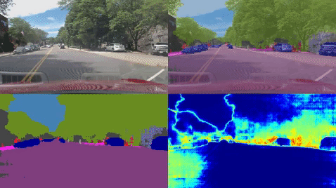
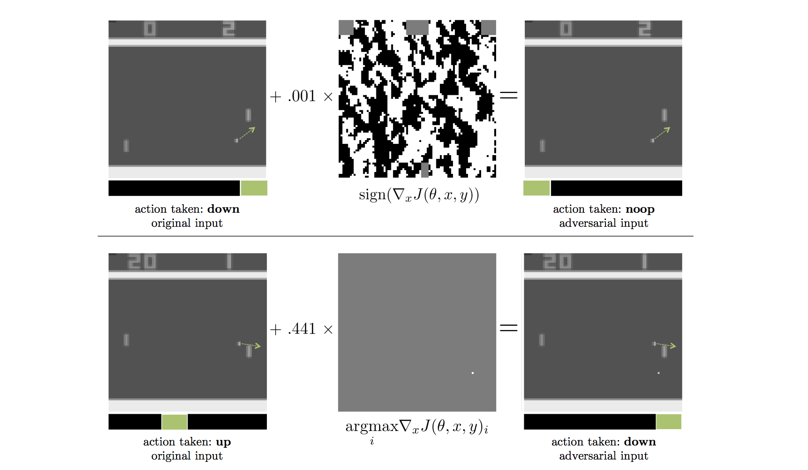
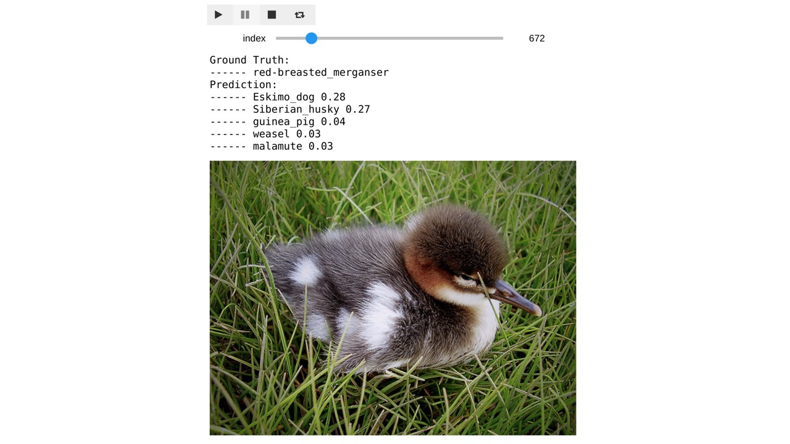
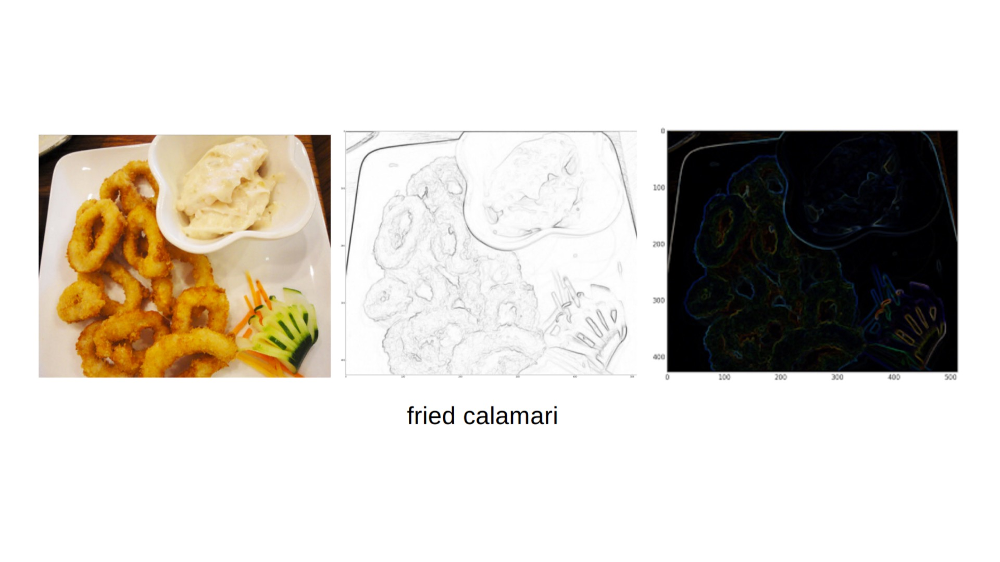
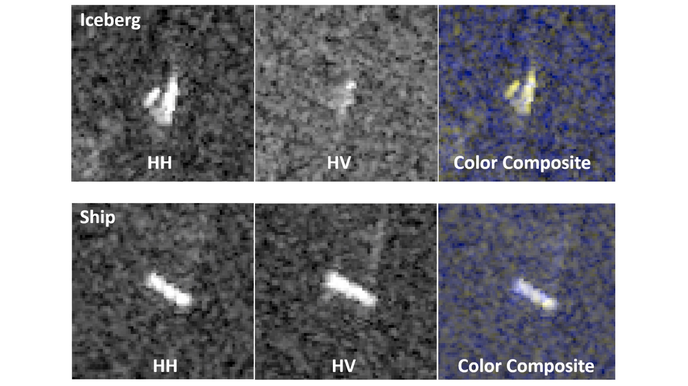
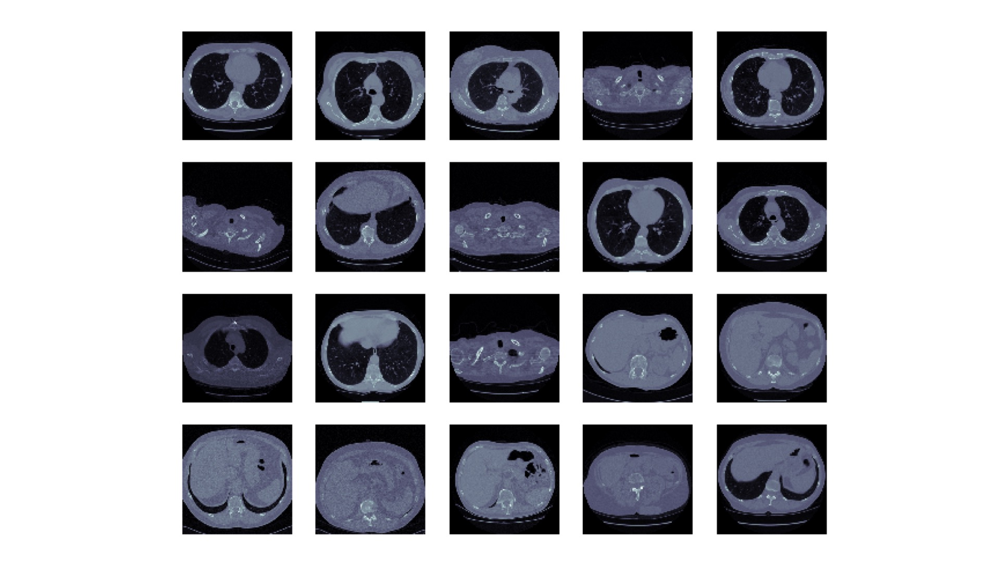

Li Ding | 丁立
I'm currently at MIT, working on deep learning for perception and control of autonomous vehicles. Our research focuses on Human-Centered Artificial Intelligence (HCAI) that leverages human knowledge to enhance machine intelligence.
Prior to joining MIT, I worked on deep learning for human action recognition at University of Rochester (Dept. of Computer Science).
I'm from Shanghai, China. On a side of fun, I'm a casual Kaggler interested in playing with various kinds of data. I like photography, electro-funk, all kinds of cuisine, and at the moment, walking and traveling around with Pokémon Go.
News: One paper on weakly supervised action recognition has been accepted to CVPR '18.
Research
Ongoing
Driving Scene Perception

Adversarial Attack

Neural Synthesis
Dynamic Scene and Optical Flow
Past
Weakly Supervised Action Localization

Edge Cases in Image Recognition

Fine-grained Image Classification

Publication
Weakly-Supervised Action Segmentation with Iterative Soft Boundary Assignment
Li Ding, Chenliang Xu
[CVPR '18] [arXiv:
1803.10699]

MIT Autonomous Vehicle Technology Study: Large-Scale Deep Learning Based Analysis of Driver Behavior and Interaction
with Automation
Lex Fridman, Daniel E. Brown, Michael Glazer, William Angell, Spencer Dodd, Benedikt Jenik, Jack Terwilliger,
Julia Kindelsberger,
Li Ding, Sean Seaman, Hillary Abraham, Alea Mehler, Andrew Sipperley, Anthony Pettinato, Bobbie Seppelt, Linda
Angell, Bruce Mehler, Bryan Reimer
[arXiv:
1711.06976]

TricorNet: A Hybrid Temporal Convolutional and Recurrent Network for Video Action Segmentation
Li Ding, Chenliang Xu
[arXiv:
1705.07818]
Services
TA
MIT 6.S094: Deep Learning for Self-driving Cars
(Winter 2018)

MIT 6.S099: Artificial General Intelligence
(Winter 2018)

Reviewer
IEEE Transactions on Circuits and Systems for Video Technology (2018)
IEEE Access (2018)
Kaggle
Level: Competitions Expert (highest rank: 1169 | current rank)
Satellite Iceberg Detection
· 2018
· Top 6%

Lung Cancer Detection
· 2017
· Top 6%

Thanks for visiting!